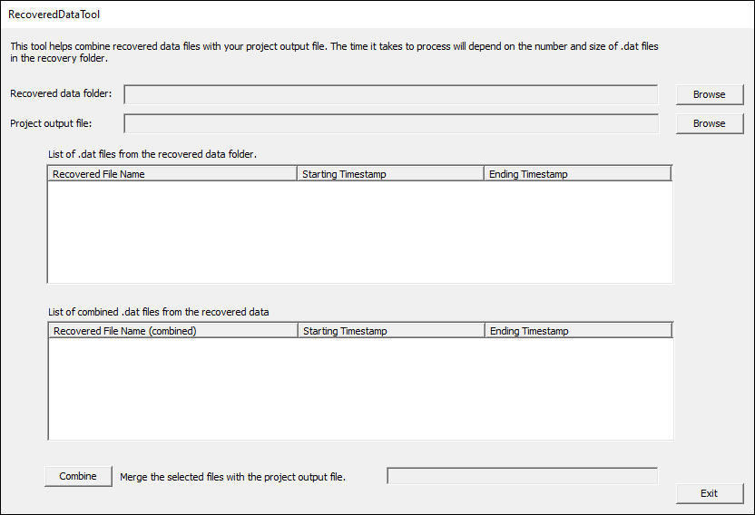
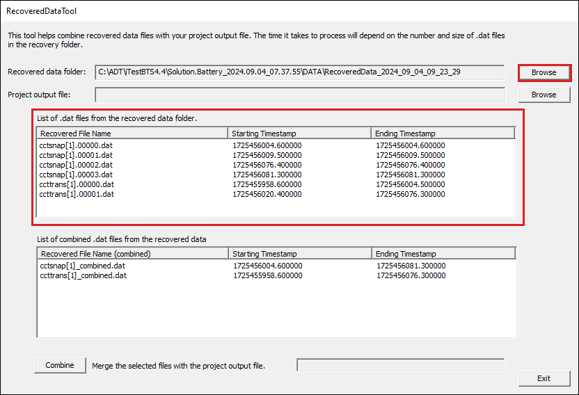
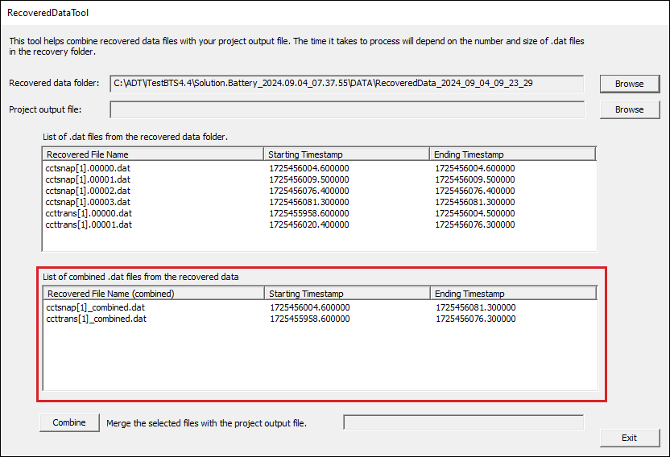

iTest User's Guide
This tool helps to process data files found in RecoveredData folders. There have been instances where data logging was not completed upon exiting iTest. Upon the next start-up, iTest will look for incomplete data files and copy them to a new folder named $DATADIR\RecoveredData_YYYY_MM_DD_HH_MM_SS folder. It will then convert them to a DAT file; it will not merge them into the project data log. This tool was created to help manage those files and merge them into the project data log.
 |
NOTE: | This tool only supports DAT files; MDF and BIN files are not supported. |
The Recovered data folder field is the path to the folder containing the recovered data.
The Project output file field is the path and filename of the project data file that the selected files will be merged into. A new file will be created containing the selected project file and the merged files. This new file will be named "Project output file".recovered.
RecoveredDataTool Interface

Use the Browse button next to the Recovered data folder field to select the RecoveredData folder. After selection, the RecoveredDataTool will populate the upper file list with the DAT files found in the folder.
List of DAT Files From Recovered Folder

The RecoveredDataTool will combine all of the DAT files with the same base name and place them in a new subfolder named Combined. The lower files list will be populated with the newly created combined DAT files. The name of the files will have the base name with "_combined" appended.
Combined DAT Files

|
NOTE: | This may take a long time if there are many DAT files in the RecoveredData folder. There is a status indicator at the bottom of the window to show the progress. |
Use the Browse button next to the Project output file field to select the project data file to merge the data to. After selection, you can select the individual recovered DAT file(s) from the upper list or the combined DAT file(s) from the lower list to merge in with the Project output file by clicking the Combine button. Only the DAT files from the last list used for selection will be used for the combine. For example, selecting a DAT file from the lower list, and then selecting a DAT file from the upper list, will result in the DAT file from the upper list being used for the combine.
After clicking Combine, the selected file(s) will be merged in with the Project output file into a new file with .recovered appended to its name. Recovered files will not be removed when they are combined; however, the destination file will be overwritten if combined into again. Data row positions in the combined file are determined using the timestamps stored in the second column of each data file being combined together.
 |
CAUTION: | Data integrity checks are not performed when merging files. This includes if added data points per row exceed or are fewer than the listed parameters as well as if the timestamp formatting differs. |